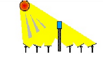
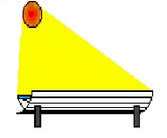
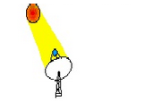

Soarele este centrul sistemului solar. Masa lui este de aproximativ 740 de ori mai mare decat masa tuturor planetelor. Imensa sa masa creaza gravitatia care atrage celelalte obiecte din jurul sau.Soarele emana continuu energie in cateva forme: vizibil - lumina, invizibil - raze infrarosii, ultraviolete, X si gamma, unde radio si plasma.
Tehnologiile "termo-solare" folosesc caldura razelor de soare pentru a produce apacalda, energie electrica si pentru a incalzii unele locuinte. Aplicatiile termo-solare se intind dela un simplu sistem rezidential de incalzire a apei pana la statii foarte mari de generare aenergiei electrice.

Avantajele energiei electrice termo-solare:
- se obtine electricitate si apa calda in acelasi timp;
- centralele pot fi adaptate la aplicatiile pentru care sunt folosite;
- poluarea este foarte mica sau inexistenta;
- construirea centralelor termo-solare se face mult mai repede decat a centralelor conventionale.